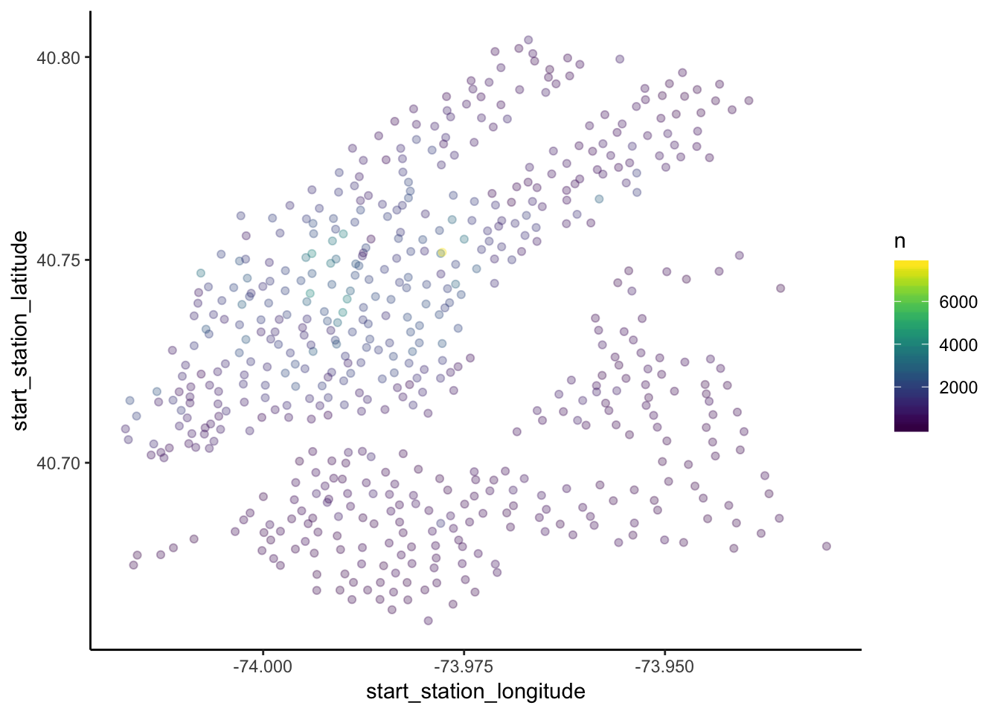
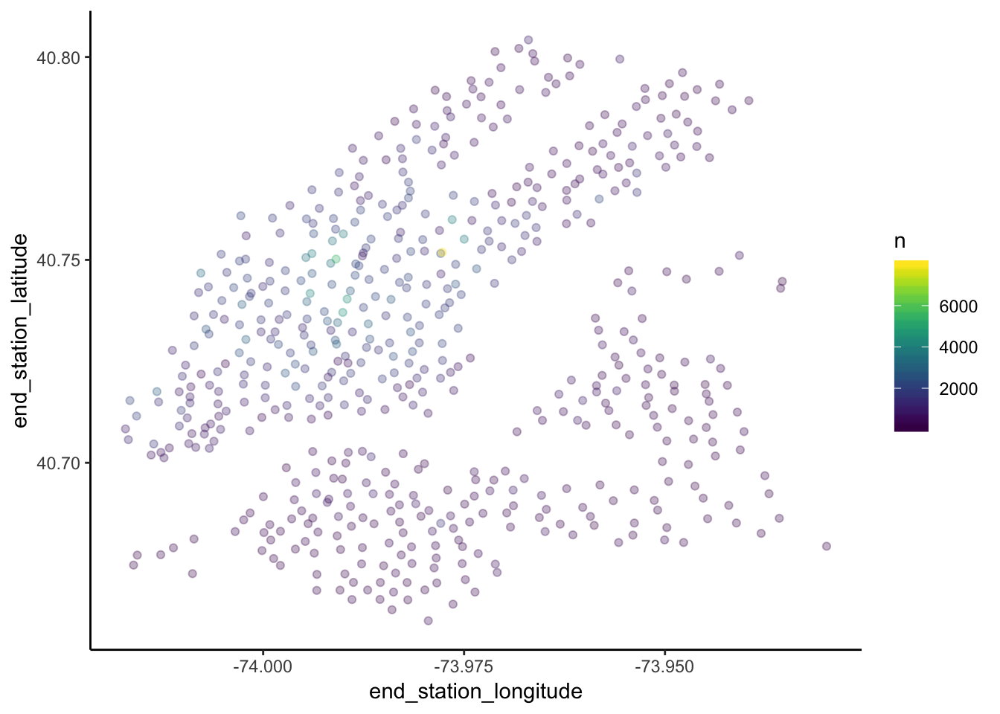
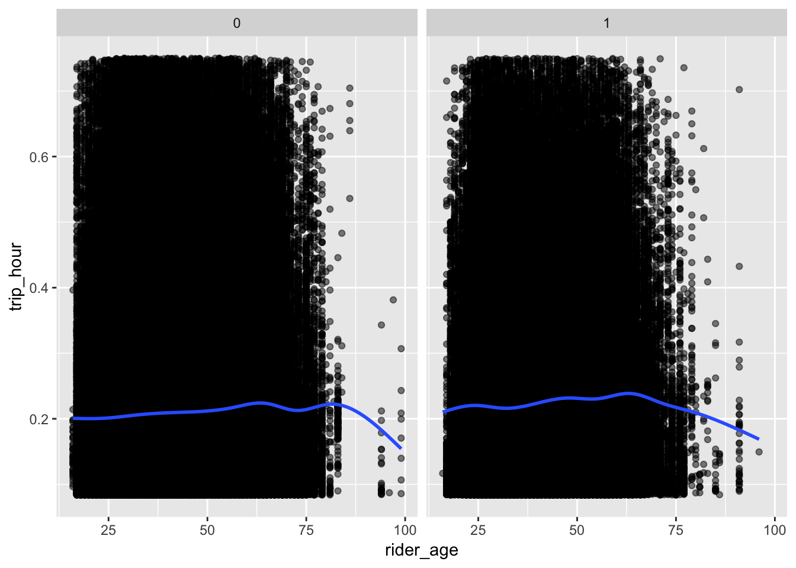

CSV zip files (corresponding to each month) of Citi Bike data for 2017 were downloaded from the company’s system data website, which is provided according to the NYCBS Data Use Policy. Originally, we felt it was better to download directly from the data source for reproducibility purposes, however, when using read_csv with the direct URL to the zip, there were several parsing errors and the import failed. This may be due to the size of the files (zips vary from 25-70 MB). We decided to download the zips of two months of interest and add them to our project’s data folder and import from there.
# Removed col names type for now and went with automatic column parsing which seemed to work well
# Need to add a variable/split date so we can identify if the trip is in the January or March dataset
citibike_import = function(file) {
df = read_csv(file, col_names = TRUE) %>%
janitor::clean_names() %>%
separate(start_time, into = c("start_date", "start_time"), sep = " ") %>%
separate(stop_time, into = c("stop_date", "stop_time"), sep = " ") %>%
separate(start_date, into = c("start_year", "start_month", "start_day"), sep = "-") %>%
separate(stop_date, into = c("stop_year", "stop_month", "stop_day"), sep = "-") %>%
mutate(user_type = tolower(user_type),
gender = as.factor(gender),
start_month = ifelse(start_month == "01", "January", "March"),
stop_month = ifelse(start_month == "01", "January", "March"),
trip_minutes = (trip_duration / 60),
rider_age = (2017 - birth_year)) %>%
filter(user_type == "subscriber",
trip_minutes > 5,
trip_minutes <= 45)
df
}
citibike_tidy =
bind_rows(citibike_import("./data/201701-citibike-tripdata.csv.zip"),
citibike_import("./data/201703-citibike-tripdata.csv.zip"))## Parsed with column specification:
## cols(
## `Trip Duration` = col_integer(),
## `Start Time` = col_datetime(format = ""),
## `Stop Time` = col_datetime(format = ""),
## `Start Station ID` = col_integer(),
## `Start Station Name` = col_character(),
## `Start Station Latitude` = col_double(),
## `Start Station Longitude` = col_double(),
## `End Station ID` = col_integer(),
## `End Station Name` = col_character(),
## `End Station Latitude` = col_double(),
## `End Station Longitude` = col_double(),
## `Bike ID` = col_integer(),
## `User Type` = col_character(),
## `Birth Year` = col_integer(),
## Gender = col_integer()
## )
## Parsed with column specification:
## cols(
## `Trip Duration` = col_integer(),
## `Start Time` = col_datetime(format = ""),
## `Stop Time` = col_datetime(format = ""),
## `Start Station ID` = col_integer(),
## `Start Station Name` = col_character(),
## `Start Station Latitude` = col_double(),
## `Start Station Longitude` = col_double(),
## `End Station ID` = col_integer(),
## `End Station Name` = col_character(),
## `End Station Latitude` = col_double(),
## `End Station Longitude` = col_double(),
## `Bike ID` = col_integer(),
## `User Type` = col_character(),
## `Birth Year` = col_integer(),
## Gender = col_integer()
## )# Reading the data directly from website doesn't work - thousands of parsing failures, both with auto parsing and when specifing column parsing in function
# citibike_import("https://s3.amazonaws.com/tripdata/201701-citibike-tripdata.csv.zip"),
# citibike_import("https://s3.amazonaws.com/tripdata/201703-citibike-tripdata.csv.zip"))# Top 10 starting stations in the month of January
citibike_tidy %>%
filter(start_month == "January") %>%
group_by(start_station_id, start_station_name) %>%
summarize(n = n()) %>%
ungroup() %>%
top_n(10, n) %>%
arrange(desc(n)) %>%
select(-start_station_id) %>%
rename("Starting CitiBike Station (Address)" = start_station_name,
"Number of times used" = n) %>%
knitr::kable(align = "c")| Starting CitiBike Station (Address) | Number of times used |
|---|---|
| Pershing Square North | 7784 |
| 8 Ave & W 33 St | 4080 |
| W 21 St & 6 Ave | 4059 |
| E 17 St & Broadway | 3949 |
| Broadway & E 22 St | 3841 |
| W 41 St & 8 Ave | 3802 |
| W 31 St & 7 Ave | 3540 |
| W 38 St & 8 Ave | 3482 |
| W 20 St & 11 Ave | 3351 |
| 8 Ave & W 31 St | 3326 |
# Top 10 starting stations in the month of March
citibike_tidy %>%
filter(start_month == "March") %>%
group_by(start_station_id, start_station_name) %>%
summarize(n = n()) %>%
ungroup() %>%
top_n(10, n) %>%
arrange(desc(n)) %>%
select(-start_station_id) %>%
rename("Starting CitiBike Station (Address)" = start_station_name,
"Number of times used" = n) %>%
knitr::kable(align = "c")| Starting CitiBike Station (Address) | Number of times used |
|---|---|
| Pershing Square North | 8138 |
| W 33 St & 7 Ave | 4578 |
| E 17 St & Broadway | 4255 |
| Broadway & E 22 St | 4141 |
| W 21 St & 6 Ave | 4009 |
| 8 Ave & W 33 St | 3968 |
| E 47 St & Park Ave | 3842 |
| W 41 St & 8 Ave | 3801 |
| W 52 St & 5 Ave | 3800 |
| W 31 St & 7 Ave | 3784 |
# Bottom 10 starting stations in the month of January
citibike_tidy %>%
filter(start_month == "January") %>%
group_by(start_station_id, start_station_name) %>%
summarize(n = n()) %>%
ungroup() %>%
top_n(-10, n) %>%
arrange(n) %>%
select(-start_station_id) %>%
rename("Starting CitiBike Station (Address)" = start_station_name,
"Number of times used" = n) %>%
knitr::kable(align = "c")| Starting CitiBike Station (Address) | Number of times used |
|---|---|
| NYCBS Depot - FAR | 3 |
| Kiosk in a box Motivate | 8 |
| Bressler | 10 |
| NYCBS Depot BAL - DYR | 17 |
| Henry St & Bay St | 21 |
| NYCBS Depot - STY | 24 |
| Columbia St & W 9 St | 25 |
| Sigourney St & Columbia St | 34 |
| Clinton St & Centre St | 36 |
| Columbia St & Lorraine St | 38 |
# Bottom 10 starting stations in the month of March
citibike_tidy %>%
filter(start_month == "March") %>%
group_by(start_station_id, start_station_name) %>%
summarize(n = n()) %>%
ungroup() %>%
top_n(-10, n) %>%
arrange(n) %>%
select(-start_station_id) %>%
rename("Starting CitiBike Station (Address)" = start_station_name,
"Number of times used" = n) %>%
knitr::kable(align = "c")| Starting CitiBike Station (Address) | Number of times used |
|---|---|
| 3 Ave & Schermerhorn St | 1 |
| Bressler | 2 |
| SSP Tech Workshop | 3 |
| NYCBS Depot BAL - DYR | 12 |
| Jackson St & Leonard St | 14 |
| Columbia St & W 9 St | 15 |
| Columbia St & Lorraine St | 20 |
| 10 Hudson Yards | 21 |
| Dwight St & Van Dyke St | 23 |
| NYCBS Depot - STY | 25 |
| Henry St & Bay St | 25 |
# Remove NYCBS Depots? # Top 10 terminal stations in the month of January
citibike_tidy %>%
filter(start_month == "January") %>%
group_by(end_station_id, end_station_name) %>%
summarize(n = n()) %>%
ungroup() %>%
top_n(10, n) %>%
arrange(desc(n)) %>%
select(-end_station_id) %>%
rename("Terminal CitiBike Station (Address)" = end_station_name,
"Number of times used" = n) %>%
knitr::kable(align = "c")| Terminal CitiBike Station (Address) | Number of times used |
|---|---|
| Pershing Square North | 7850 |
| Broadway & E 22 St | 4781 |
| E 17 St & Broadway | 4347 |
| W 21 St & 6 Ave | 4217 |
| 8 Ave & W 33 St | 4168 |
| W 52 St & 5 Ave | 3993 |
| W 41 St & 8 Ave | 3843 |
| W 31 St & 7 Ave | 3632 |
| W 20 St & 11 Ave | 3476 |
| W 38 St & 8 Ave | 3468 |
# Top 10 terminal stations in the month of March
citibike_tidy %>%
filter(start_month == "March") %>%
group_by(end_station_id, end_station_name) %>%
summarize(n = n()) %>%
ungroup() %>%
top_n(10, n) %>%
arrange(desc(n)) %>%
select(-end_station_id) %>%
rename("Terminal CitiBike Station (Address)" = end_station_name,
"Number of times used" = n) %>%
knitr::kable(align = "c")| Terminal CitiBike Station (Address) | Number of times used |
|---|---|
| Pershing Square North | 8084 |
| W 33 St & 7 Ave | 5521 |
| Broadway & E 22 St | 4560 |
| E 17 St & Broadway | 4517 |
| W 21 St & 6 Ave | 4089 |
| W 52 St & 5 Ave | 3956 |
| 8 Ave & W 33 St | 3833 |
| W 41 St & 8 Ave | 3807 |
| E 47 St & Park Ave | 3784 |
| W 38 St & 8 Ave | 3601 |
# Bottom 10 terminal stations in the month of January
citibike_tidy %>%
filter(start_month == "January") %>%
group_by(end_station_id, end_station_name) %>%
summarize(n = n()) %>%
ungroup() %>%
top_n(-10, n) %>%
arrange(n) %>%
select(-end_station_id) %>%
rename("Terminal CitiBike Station (Address)" = end_station_name,
"Number of times used" = n) %>%
knitr::kable(align = "c")| Terminal CitiBike Station (Address) | Number of times used |
|---|---|
| Exchange Place | 1 |
| E 71 St & 1 Ave | 2 |
| NYCBS Depot BAL - DYR | 7 |
| NYCBS Depot - FAR | 8 |
| Kiosk in a box Motivate | 8 |
| Bressler | 10 |
| Columbia St & W 9 St | 21 |
| Henry St & Bay St | 22 |
| NYCBS Depot - STY | 25 |
| Henry St & W 9 St | 27 |
# Bottom 10 terminal stations in the month of March
citibike_tidy %>%
filter(start_month == "March") %>%
group_by(end_station_id, end_station_name) %>%
summarize(n = n()) %>%
ungroup() %>%
top_n(-10, n) %>%
arrange(n) %>%
select(-end_station_id) %>%
rename("Terminal CitiBike Station (Address)" = end_station_name,
"Number of times used" = n) %>%
knitr::kable(align = "c")| Terminal CitiBike Station (Address) | Number of times used |
|---|---|
| Essex Light Rail | 1 |
| 3 Ave & Schermerhorn St | 2 |
| Bressler | 2 |
| Morris Canal | 5 |
| NYCBS Depot BAL - DYR | 7 |
| SSP Tech Workshop | 8 |
| Jackson St & Leonard St | 10 |
| Penn Station Valet - Valet Scan | 15 |
| 10 Hudson Yards | 18 |
| Columbia St & W 9 St | 21 |
# citibike_tidy %>%
# filter(start_month == "01") %>%
# group_by(start_station_id, start_station_name, start_station_latitude, start_station_longitude) %>%
# summarize(n = n()) %>%
# filter(n > 1000) %>%
# plot_ly(x = ~start_station_longitude, y = ~start_station_latitude, type = "scatter", mode = "markers",
# alpha = 0.3,
# color = ~n)
##ggplot of above
## map of nyc based on lat/long, overlay ggplot on top? https://cran.r-project.org/web/packages/magick/vignettes/intro.html#combining
#Jan
citibike_tidy %>%
filter(start_month == "January") %>%
group_by(start_station_id, start_station_latitude, start_station_longitude) %>%
summarize(n = n()) %>%
filter(n > 100) %>%
ggplot(aes(x = start_station_longitude, y = start_station_latitude, color = n)) +
geom_point(alpha = 0.3) +
scale_color_viridis() +
coord_cartesian() +
theme_classic()
#March
citibike_tidy %>%
filter(start_month == "March") %>%
group_by(start_station_id, start_station_latitude, start_station_longitude) %>%
summarize(n = n()) %>%
filter(n > 100) %>%
ggplot(aes(x = start_station_longitude, y = start_station_latitude, color = n)) +
geom_point(alpha = 0.3) +
scale_color_viridis() +
coord_cartesian() +
theme_classic()## ggplot of end stations
#Jan
citibike_tidy %>%
filter(start_month == "January") %>%
group_by(end_station_id, end_station_latitude, end_station_longitude) %>%
summarize(n = n()) %>%
filter(n > 100) %>%
ggplot(aes(x = end_station_longitude, y = end_station_latitude, color = n)) +
geom_point(alpha = 0.3) +
scale_color_viridis() +
coord_cartesian() +
theme_classic()#March
citibike_tidy %>%
filter(start_month == "March") %>%
group_by(end_station_id, end_station_latitude, end_station_longitude) %>%
summarize(n = n()) %>%
filter(n > 100) %>%
ggplot(aes(x = end_station_longitude, y = end_station_latitude, color = n)) +
geom_point(alpha = 0.3) +
scale_color_viridis() +
coord_cartesian() +
theme_classic()
# least used stations plotly
#citibike_tidy %>%
# filter(start_month == "01") %>%
# group_by(start_station_name, start_station_latitude, start_station_longitude) %>%
# summarize(n = n()) %>%
# arrange(n) %>%
# filter(n < 500) %>%
# plot_ly(x = ~start_station_longitude, y = ~start_station_latitude, type = "scatter", mode = "markers",
# alpha = 0.3,
# color = ~n)# Histogram of when people start their rides, by gender!
citibike_tidy %>%
group_by(gender) %>%
filter(gender != 0) %>%
mutate(start_hour = str_sub(start_time, 0, 2),
start_hour = as.numeric(start_hour)) %>%
ggplot(aes(x = start_hour)) +
geom_histogram() +
labs(x = "Start hour",
y = "Frequency") +
facet_grid(~ gender)## `stat_bin()` using `bins = 30`. Pick better value with `binwidth`.# who are the people over 100; also, this is kind of ug the way i have done it; whose trips are more than 500 hours??????? how is this calculated??
citibike_tidy %>%
filter(gender != 0) %>%
mutate(trip_hour = trip_minutes / 60) %>%
ggplot(aes(x = rider_age, y = trip_hour)) +
geom_point(alpha = 0.5) +
geom_smooth(se = FALSE) +
facet_grid(~ gender)## `geom_smooth()` using method = 'gam' and formula 'y ~ s(x, bs = "cs")'## Warning: Removed 24 rows containing non-finite values (stat_smooth).## Warning: Removed 24 rows containing missing values (geom_point).
Most/least popular days of the week of travel
Simple linear regression of trip duration vs. age, sex, time of day (categorical: morning rush hour, morning, evening rush hour), day of week
Map of where people start
# this looks pretty dumb; is it a scale issue?
citibike_tidy %>%
filter(start_station_longitude != 0) %>%
ggplot(aes(x = start_station_longitude, y = start_station_latitude)) +
geom_point()citibike_tidy %>%
filter(end_station_longitude != 0) %>%
ggplot(aes(x = end_station_longitude, y = end_station_latitude)) +
geom_point()# Histogram of how long people ride for, by month!
# can we change the month labels??
citibike_tidy %>%
mutate(start_day = as.numeric(start_day)) %>%
group_by(start_month, start_day) %>%
mutate(mean_trip_hour = mean(trip_minutes / 60)) %>%
ggplot(aes(x = start_day, y = mean_trip_hour, color = start_month)) +
geom_point(alpha = 0.5) +
geom_smooth(se = FALSE) +
labs(x = "Day of the month",
y = "Mean length of trip (hours)") +
scale_color_hue(name = "Month") +
facet_grid(~ start_month)## `geom_smooth()` using method = 'gam' and formula 'y ~ s(x, bs = "cs")'*ongoing data questions: do we need both trip_duration and trip_minutes?